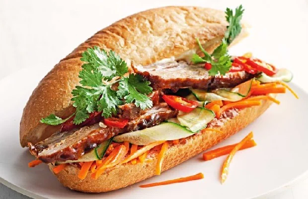

Banh Mi

Description
n Vietnamese cuisine, Bánh mì or banh mi is a short baguette with thin, crisp crust and soft, airy texture. It is often split lengthwise and filled with savory ingredients like a submarine sandwich and served as a meal. Plain banh mi is also eaten as a staple food.
A typical Vietnamese roll or sandwich is a fusion of meats and vegetables from native Vietnamese cuisine such as chả lụa (pork sausage), coriander leaf (cilantro), cucumber, pickled carrots, and pickled daikon combined with condiments from French cuisine such as pâté, along with red chili and buttery mayonnaise.However, a wide variety of popular fillings are used, from xíu mại to even ice cream. In Vietnam, bread rolls and sandwiches are typically eaten for breakfast or as a snack.
The baguette was introduced to Vietnam by the French in the mid-19th century, during the Nguyem dynasty and became a staple food by the early 20th century. During the 1950s, a distinctly Vietnamese style of sandwich developed in Saigon, becoming a popular street food, also known as bánh mì Sài Gòn ("Saigon sandwich", "Saigon-style banh mi"). Following the Vietnam War, Overseas Vietnamese popularized the bánh mì sandwich in countries such as Australia, Canada and the United States. In these countries they are commonly sold in Asian bakeries.
Ingredients
- ½ cup rice vinegar
- ¼ cup water
- ¼ cup white sugar
- ¼ cup carrot, cut into 1/16-inch-thick matchsticks
- ¼ cup white (daikon) radish, cut into 1/16-inch-thick matchsticks
- ¼ cup thinly sliced white onion
- 1 skinless, boneless chicken breast half
- garlic salt to taste
- ground black pepper to taste
- 1 (12 inch) French baguette
- 4 tablespoons mayonnaise
- ¼ cup thinly sliced cucumber
- 1 tablespoon fresh cilantro leaves
- 1 small jalapeno pepper - seeded and cut into 1/16-inch-thick matchsticks
- 1 wedge lime
Steps
- Place rice vinegar, water, and sugar into a saucepan over medium heat, bring to a boil, and stir until the sugar has dissolved, about 1 minute. Allow the mixture to cool.
- Pour the cooled vinegar mixture over the carrot, radish, and onion in a bowl, and allow to stand for at least 30 minutes. Drain off the excess vinegar mixture after the vegetables have marinated.
- While the vegetables are marinating, preheat the oven's broiler, and set the oven rack about 6 inches from the heat source. Lightly oil a slotted broiler pan.
- Sprinkle the chicken breast with garlic salt and pepper, and broil on slotted broiler pan, turning once, until the center of the chicken breast is no longer pink and the surface has browned, about 6 minutes per side. Remove the broiled chicken, and slice into bite-size pieces.
- Slice the baguette in half the long way, and pull the center of the bread out of the baguette halves, leaving a cavity for the filling. Place the baguette halves under the broiler to lightly toast, 2 to 3 minutes.
- To assemble the bahn mi sandwich, spread each half of the toasted baguette with mayonnaise, and fill the cavity of the bottom half of the bread with broiled chicken, cucumber slices, pickled carrot, onion, and radish, cilantro leaves, and jalapeno pepper. Squeeze a wedge of lime over the filling, and top with the other half of the baguette.
Nutrition Facts
Per Serving: 657 calories; protein 24g; carbohydrates 85.2g; fat 25.2g; cholesterol 42.8mg; sodium 990mg.